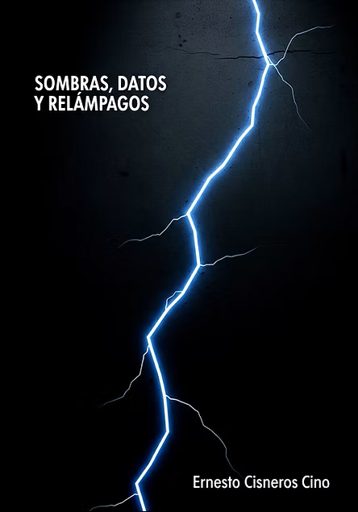

Sombras, Datos y Relámpagos
Este libro fue escrito en mi idioma nativo, preservando el tono, ritmo y textura emocional que moldeó su voz original.
Este es mi primer libro, una obra híbrida que se mueve entre ficción, ensayo y poesía, todo tejido alrededor de una sola pregunta: ¿Qué es el poder y cómo habita nuestras vidas?
El libro está estructurado en tres movimientos:
- Sombras — Una serie de historias donde el poder toma la forma de memoria, ilusión, violencia, destino, máquinas o silencio. Desde un piano ardiente en un garaje de La Habana, hasta una puerta que solo puede cruzarse con un anillo perdido, hasta la lógica inquietante de un circo que se convierte en gobierno.
- Datos — Ensayos filosóficos e históricos sobre las infraestructuras invisibles de la dominación: hábitos políticos, sistemas tecnológicos, la arquitectura de la obediencia, las fuerzas de la naturaleza, la seducción de las simulaciones, y las mitologías que mantienen unidas a las sociedades o las desgarran.
- Relámpagos — Poemas escritos como destellos: breves, agudos, viscerales. Son el pulso emocional del libro, heridas que hablan, memorias que se encienden, e intuiciones que aparecen como tormentas repentinas.
Este libro fue escrito durante un período de profunda transición, entre países, entre vidas, entre identidades, entrelazando memorias de infancia, exilio, música, filosofía, ciencia, y las sombras de sistemas políticos.
No es un libro lineal. Es una partitura: una composición hecha de oscuridad, análisis e iluminación.
Su intención no es ofrecer respuestas, sino crear resonancia.